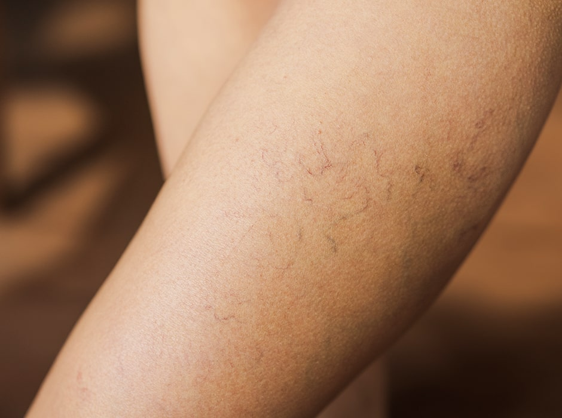
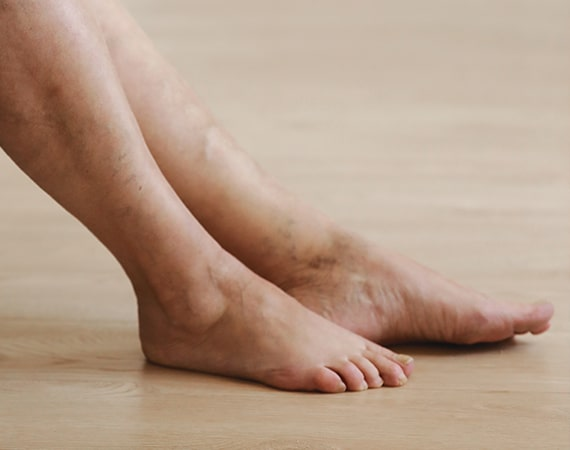
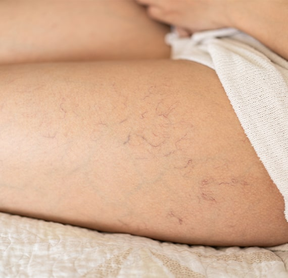
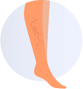
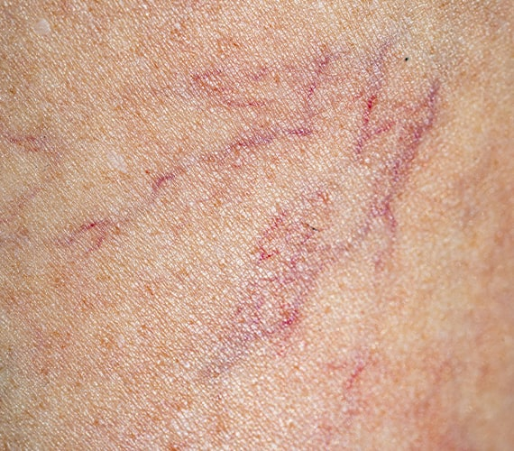
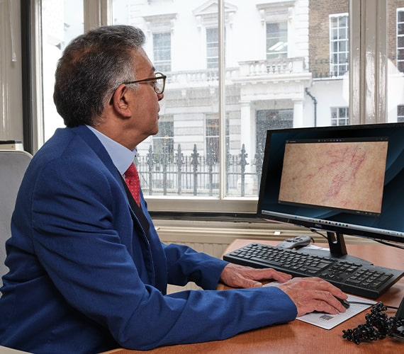
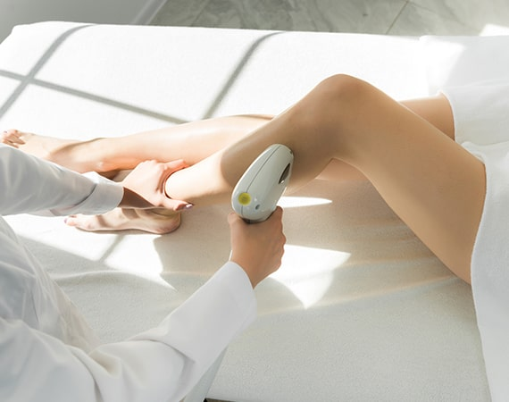

Need help with thread veins?
If you are experiencing unwanted thread veins and need treatment, get in touch with our thread vein removal clinic now to book a consultation with one of our experienced physicians.


Thread veins, also known as spider veins, are small, prominent blood vessels that run just below the surface of the skin. These veins can be red or purple in colour and are medically referred to as telangiectasias. Thread veins often affect the skin on the face and legs. Although not a health problem, thread veins can cause discomfort and embarrassment, leading to a loss of self-esteem, particularly as clothing choices become restricted. Many people find thread veins unsightly, and unfortunately, they do not usually disappear on their own.

Thread veins can occur for a variety of reasons, such as sun exposure, skin aging, long-term topical steroid use, and hormones such as oestrogen. They can also run in families as part of an inherited condition. Different types of thread veins require different treatment modalities. As such, thread vein removal is highly customised to the individual. The doctors at our private thread vein removal clinic in London will recommend the best method for you.

Intense Pulsed Light (IPL) treatment is a highly effective method for removing thread veins, also known as spider veins. This advanced therapy uses a broad spectrum of light wavelengths to target and diminish the appearance of these small, prominent blood vessels that lie just beneath the skin's surface. During the procedure, the IPL device emits precise pulses of light that penetrate the skin, targeting the haemoglobin within the thread veins. The light energy is converted into heat, which breaks down the vessel walls, causing the veins to collapse and gradually be reabsorbed by the body.
Over a series of treatments, this process significantly reduces the visibility of thread veins, leaving the skin clearer and more evenly toned. IPL treatment is non-invasive, with minimal discomfort and downtime, making it an ideal option for those looking to address cosmetic concerns caused by thread veins. Contact our thread removal clinic in London today to learn more about how IPL can help you achieve smoother, vein-free skin.

The Nd:YAG laser treatment, commonly referred to as YAG, is a highly effective alternative to Intense Pulsed Light (IPL) for the removal of thread veins. This advanced laser treatment is particularly beneficial for targeting deeper and more resilient veins that may not respond as well to IPL. At our thread vein removal clinic in London, we offer both YAG and IPL treatments, allowing our experienced practitioners to tailor the most effective treatment plan for each individual’s skin type and vein condition. The YAG laser works by delivering a precise energy level to the target thread vein. This energy is absorbed by the blood within the vein, causing the vessel walls to heat up and break down. The heat generated by the laser coagulates the blood within the vessel, which then causes the vein to collapse and eventually be reabsorbed by the body's natural processes. Over time, the treated thread vein diminishes in appearance, resulting in clearer, smoother skin.

This treatment is particularly advantageous because of its precision and ability to target veins of various depths and sizes. Additionally, the YAG laser is suitable for all skin types, making it a versatile option for patients. The procedure is minimally invasive, with most patients experiencing only mild discomfort and minimal downtime. Follow-up sessions may be necessary to achieve optimal results, ensuring the complete breakdown and absorption of the thread veins. Our clinic’s comprehensive approach ensures that each patient receives a personalised treatment plan that addresses their specific needs, providing the best possible outcome for thread vein removal. Contact our thread vein removal clinic in London to learn more about how YAG laser treatment can help you achieve vein-free, radiant skin.

On the day of your thread vein removal procedure, your practitioner will go through everything with you and answer any questions you may have. Then, you’ll lie back and relax on one of our treatment beds while the practitioner applies a cooling gel to the area to be treated. You’ll be asked to wear some goggles to protect your eyes from the light of the IPL and YAG machine, and then your thread vein removal treatment will begin. The practitioner will pass the laser head over the treatment area. You may feel some slight discomfort during the procedure, which is often described as a pinging sensation.

The IPL and YAG laser treatments can provide a long-term solution to thread veins in just a few sessions. On average, patients with thread veins require between 3 and 5 treatments to achieve the best possible results. Unlike other treatments, there is little to no downtime associated with the procedure, so you can return to your normal routine straight after the treatment. Depending on the size of the thread veins, you may be able to see results after a single session. Get in touch with our thread vein removal clinic in London for a more precise answer based on your individual needs.

When carried out by a trained professional, IPL and YAG laser thread vein removal treatments are very safe. As with all procedures, there is a small risk of side effects, but these are rare. Side effects can include slight redness and swelling of the treated area, blistering or bruising, and hyper- or hypopigmentation. The treated area may sometimes change colour temporarily as the treatment works at the vascular level and the vessel is broken down. Any redness or swelling generally disappears within a few hours, and the remaining side effects are very rare. The London Dermatology Centre's dermatologists and physicians will carry out a full assessment prior to your treatment to minimise these risks.

The most common applications of the IPL and YAG laser are hair reduction and skin rejuvenation. Rejuvenation is achieved through the reduction of pigmented lesions such as age spots, freckles, and other signs of aging, including wrinkles in photo-aged skin. Additionally, these lasers are effective in treating vascular lesions such as thread veins, birthmarks, and varicose veins in the legs. The YAG laser, in particular, is also versatile enough to perform tattoo removal, making it a valuable tool in dermatological treatments. These lasers offer a wide range of solutions for various skin concerns, providing patients with effective and minimally invasive options for improving their skin’s appearance and health.

During the procedure, you may experience a very slight pinging sensation as the IPL treatment head is passed over your skin. Patients often describe this sensation as feeling like an elastic band being flicked onto the skin. Prior to your treatment, you will undergo a patch test with one of our aesthetic practitioners. This ensures that you do not experience any adverse reactions and confirms that your skin type is suitable for the IPL and YAG treatments. This patch test also allows you to experience what the IPL treatment feels like. The IPL and YAG treatments are not painful and do not require any local anaesthetic. For more information regarding the IPL and YAG laser treatments for thread vein removal, please contact us on 0207 467 3720.
If you are interested in getting treatment for thread vein removal in London, our clinic is conveniently situated at 69 Wimpole Street, close to the renowned Harley Street. For those travelling by underground, Bond Street Station is just a seven-minute walk away. If you prefer to drive, ample street parking is available nearby. Our dermatology clinic is also equipped with wheelchair access for those who require it.
Monday - Friday: 9.00 AM - 5.30 PM
Saturday & Sunday: Closed
69 Wimpole Street,
London W1G 8AS.
If you are experiencing unwanted thread veins and need treatment, get in touch with our thread vein removal clinic now to book a consultation with one of our experienced physicians.